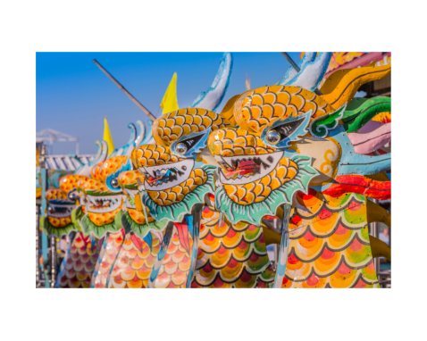
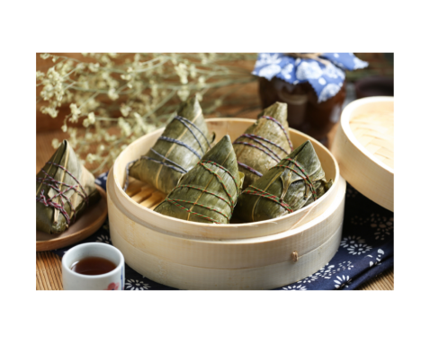
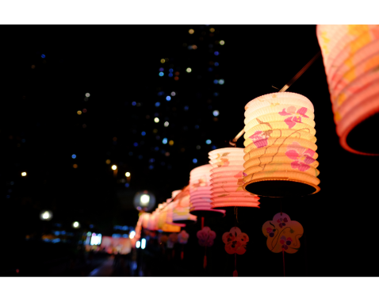

Dragon Boat racing is based on a legend of the ancient patriot-poet Qu Yuan who lived from
340-278
BC. He was a Court Minister who advocated reforms for his home state of Chu. The King of Chu,
however, disliked him for it and banished him from the state.
In exile, he wandered the country writing poetry expressing his concerns for his homeland and
its
people. In 278 BC when Qu Yuan heard that his home had been invaded, he jumped into the Ni Lo
River
and drowned himself.
Legend has it that local fishermen raced out to the river to save him, but couldn't. To prevent
his
body from being eaten by the fish, they threw rice dumplings into the water as an offering to
his
heroic spirit. This was the beginning of Dragon Boat Racing.
Today, rice dumplings are eaten on the day of the Dragon Boat Festival, which is commemorated
each
year on the fifth day of the fifth lunar month. Four days before the festival begins, the dragon
boats are taken from their resting places and their heads and tails attached. They are then
ritually
blessed by a Buddhist monk and later brought to life before the races by having their eyes
dotted in
red paint.


In Hong Kong, it is the fishermen of the territory's outlying islands such as Lantau, Lamma, and Cheung Chau, who observe these rituals. After the races, it is customary to spend the remainder of the day observing street theater, traditional Chinese dance performances, martial arts and other cultural demonstrations.